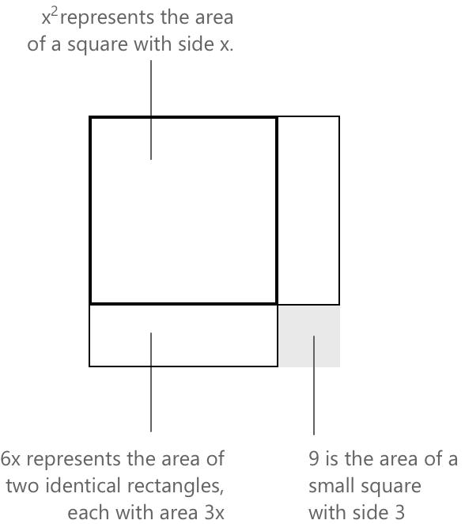

Виділення повного квадрата
Виділення повного квадрата
Виділення повного квадрата — це алгебраїчний метод, що використовується для перетворення квадратичного полінома у форму, яка розкриває його структурні властивості. Розглянемо поліном вигляду:
\[ p(x) = ax^2 + bx + c, \quad a \neq 0 \]
Метою є визначити дійсні сталі \( h \) та \( k \), які залежать від \( a \), \( b \) та \( c \), так щоб \( p(x) \) набув вигляду вершини
\[ p(x) = a(x + h)^2 + k \]
Пара \( (-h,\, k) \) визначає вершину відповідної параболи. Значення \( k \) представляє мінімум \( p \), якщо \( a > 0 \), і максимум, якщо \( a < 0 \). Прирівнювання \( p(x) \) до нуля дає рівняння \( a(x+h)^2 = -k \), з якого корені можна знайти, добувши квадратні корені з обох частин.
Щоб вивести явні вирази для \( h \) та \( k \), процес починається з винесення \( a \) за дужки у квадратичного та лінійного членів:
\[ p(x) = a\left(x^2 + \frac{b}{a}x\right) + c \]
Вирішальним кроком є додавання та віднімання \( \left(\dfrac{b}{2a}\right)^{\!2} \) всередині дужок — величини, обраної так, щоб три члени, що містять \( x \), утворювали тричлен квадратний, що є повним квадратом тричленом:
\[ p(x) = a\left(x^2 + \frac{b}{a}x + \left(\frac{b}{2a}\right)^{\!2} - \left(\frac{b}{2a}\right)^{\!2}\right) + c \]
Розпізнавання тричлена як повного квадрата дозволяє переписати його в компактній формі:
\[ p(x) = a\left[\left(x + \frac{b}{2a}\right)^{\!2} - \frac{b^2}{4a^2}\right] + c \]
Розкриваючи дужки з \( a \) та об'єднуючи сталі члени, отримаємо:
\[ p(x) = a\left(x + \frac{b}{2a}\right)^{\!2} - \frac{b^2}{4a} + c \]
що є формою вершини з:
\[ h = \frac{b}{2a} \qquad k = c – \frac{b^2}{4a} \]
Геометрична інтерпретація
Алгебраїчна тотожність, що лежить в основі методу виділення повного квадрата, дозволяє дати пряму геометричну інтерпретацію. Розглянемо наступний вираз:
\[ x^2 + 6x + 9 \]
Кожен член представляє площу певної геометричної області: \( x^2 \) відповідає квадрату зі стороною \( x \); \( 6x \) представляє сукупну площу двох прямокутників, кожен з яких має розміри \( x \times 3 \); а \( 9 \) позначає площу квадрата зі стороною \( 3 \). Коли ці три області розташовані навколо спільної вершини, вони заповнюють більший квадрат зі стороною \( x + 3 \), тим самим підтверджуючи тотожність:
\[ x^2 + 6x + 9 = (x + 3)^2 \]

Це геометричне обґрунтування застосовне саме тоді, коли стала частина дорівнює квадрату половини лінійного коефіцієнта, як у полінома з кратним коренем. Прирівнювання виразу до нуля дає рівняння \( (x+3)^2 = 0 \), єдиним розв'язанням якого є \( x = -3 \). У загальному випадку виділення повного квадрата забезпечує необхідну алгебраїчну корекцію, навіть якщо підсумкова конфігурація не відповідає конкретній геометричній реалізації над додатними дійсними числами.
Коли коефіцієнти є малими цілими числами і поліном легко розкладається, цей геометричний підхід часто є простішим, ніж використання формули коренів квадратного рівняння. Його ефективність знижується, коли старший коефіцієнт або лінійний член містять дроби або ірраціональні числа, оскільки обчислення стають складнішими і формула коренів зазвичай є кращим варіантом.
Приклад 1
Застосування методу можна продемонструвати на наступному квадратному рівнянні:
\[ 3x^2 – 4x – 1 = 0 \]
Сталий член переносимо в праву частину, і обидві частини ділимо на \( 3 \):
\[ x^2 – \frac{4}{3}x = \frac{1}{3} \]
Значення, яке додається до обох частин, є квадратом половини коефіцієнта при \( x \), а саме:
\[ \left(\frac{1}{2} \cdot \frac{4}{3}\right)^{\!2} = \left(\frac{2}{3}\right)^{\!2} = \frac{4}{9} \]
\[ x^2 - \frac{4}{3}x + \frac{4}{9} = \frac{1}{3} + \frac{4}{9} \]
На цьому етапі ліва частина утворює тричлен, що є повним квадратом:
\[ \left(x – \frac{2}{3}\right)^{\!2} = \frac{3}{9} + \frac{4}{9} = \frac{7}{9} \]
Добування квадратного кореня з обох частин дає
\[ x – \frac{2}{3} = \pm\,\frac{\sqrt{7}}{3} \]
Рівняння має два дійсні корені:
\[ x = \frac{2 \pm \sqrt{7}}{3} \]
Коли коефіцієнти не є малими цілими числами, виділення повного квадрата зазвичай є більш трудомістким, ніж пряме застосування формули коренів квадратного рівняння. Останній метод у таких випадках зазвичай є кращим.
Виведення формули коренів квадратного рівняння
Основним застосуванням методу доповнення до повного квадрата є те, що він дозволяє отримати формулу коренів квадратного рівняння як прямий наслідок, а не як незалежний результат. Виведення починається з загального квадратного рівняння:
\[ ax^2 + bx + c = 0 \quad a \neq 0. \]
Поділимо обидві частини на \( a \) і перенесемо сталу до правої частини:
\[ x^2 + \frac{b}{a}x = -\frac{c}{a} \]
Додавання \( \left(\dfrac{b}{2a}\right)^{\!2} \) до обох частин дозволяє доповнити до повного квадрата ліву частину:
\[ x^2 + \frac{b}{a}x + \left(\frac{b}{2a}\right)^{\!2} = \left(\frac{b}{2a}\right)^{\!2} - \frac{c}{a} \]
Це дає:
\[ \left(x + \frac{b}{2a}\right)^{\!2} = \frac{b^2 - 4ac}{4a^2} \]
Вилучивши квадратний корінь з обох частин і розв'язавши відносно \( x \), ми отримаємо:
\[ x = \frac{-b \pm \sqrt{b^2 – 4ac}}{2a} \]
Це виведення показує, що формула коренів квадратного рівняння є прямим наслідком методу доповнення до повного квадрата, застосованого до загального квадратного рівняння.
Вираз \( b^2 – 4ac \), який знаходиться під знаком квадратного кореня у формулі, називається дискримінантом рівняння. Його знак визначає характер коренів:
- Коли \( b^2 – 4ac > 0 \), рівняння має два різні дійсні корені.
- Коли \( b^2 – 4ac = 0 \), воно має один повторюваний дійсний корінь.
- Коли \( b^2 – 4ac < 0 \), дійсних коренів немає, оскільки квадратний корінь з від'ємного числа не визначений у \( \mathbb{R} \).